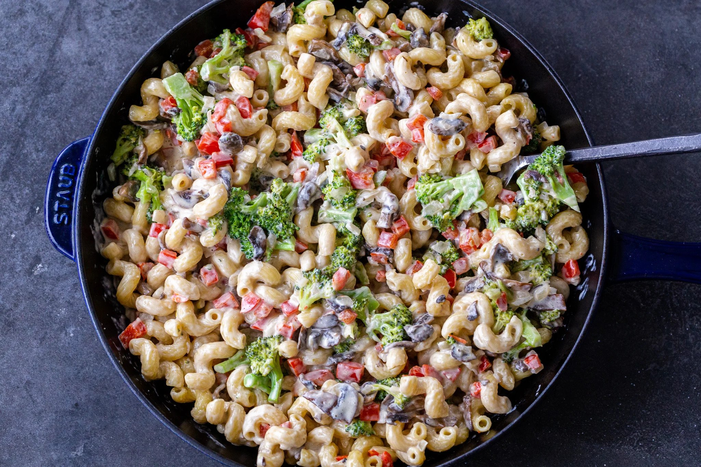

30-Minute Creamy Veggie Pasta

Description
This creamy vegetarian pasta is a sneaky yet delicious way to get a full serving of veggies. Made in just 30 minutes!
Ingredients
- 2 tbsp Unsalted Butter
- 1 red bell pepper
- 1 small onion
- 2 cups mushrooms
- 16oz pasta - Cavatappi is a great option
- 2 garlic cloves
- 3/4 cup parmesan cheese
- 2 cup broccoli
- 2 cup heavy whipping cream
- 1 tsp garlic parsley salt, adjust to taste
Steps
- Dice the bell pepper and onion into 1-inch cubes. Slice the mushrooms. Set the veggies aside.
- Preheat a deep skillet with butter over medium heat. Add the mushrooms and cook them until they soften.
- Add the bell peppers and onions to the skillet and cook them until they soften.
- Cook the pasta in a boiling pot of hot water for about 4 minutes less than the box instructions. Add the partially cooked pasta into the skillet with the veggies.
- Add the heavy whipping cream, pressed garlic, and broccoli to the skillet. Cook for about 5 minutes.
- Fold in the parmesan cheese and stir until evenly combined.
- Serve immediately and enjoy!